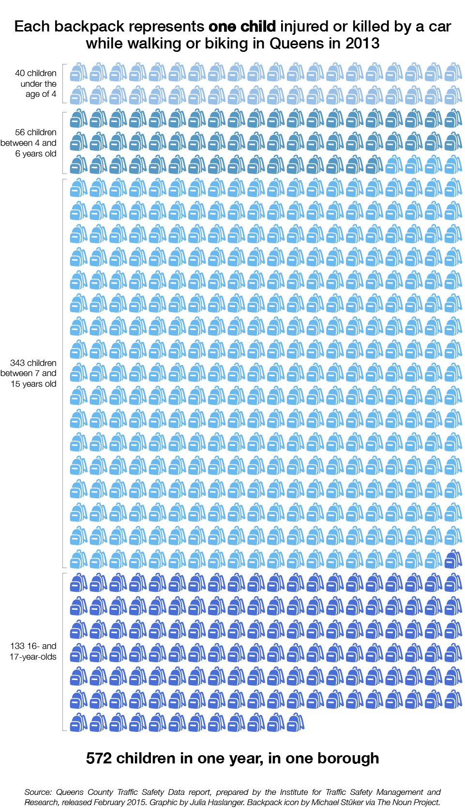

Vision Zero for Queens Schoolkids
Parents, politicians and community members are taking actions to make streets safer for kids going to and from school in the borough known for its "Boulevard of Death."
Nearly 350,000 kids travel to and from school in Queens each day. The Department of Health found that a car accidents are leading cause of death for elementary and middle school-age children across the city. And more often than not, the child killed is a pedestrian.


4 out of 5
4 out of 5 NYC kids ages 5 to 9 who were killed in a motor vehicle incident were pedestrians (2002-2011, DOH).
The city's second-largest borough is packed with activists trying to make the streets safer for kids on foot and bike, and city agencies have joined in the effort. So what are advocates and bureaucrats are trying to make Queens streets safer?
Let's start by looking at the problem.

Queens has a reputation for being a deadly place for pedestrians.
Queens Boulevard has been known as the Boulevard of Death for at least 20 years. In 1993, 17 deaths were reported for that roadway alone.
December 2012 marked the beginning of a deadly time for children in particular in northern Queens, as the borough was rocked by the deaths of Miguel Torres, Jahair Figueroa, Drudak Tenzin, Allison Liao, and Noshat Nahian among others through the end of 2013.
There was also an incident in September 2013 that left five kids seriously injured after a driver went up onto the sidewalk as the students were walking to school. That crash happened in Maspeth, where an estimated 4,000 students go to and from just three schools (IS 73, PS 58 and Maspeth High School).
CityLab declared in late 2013 that Northern Boulevard, which intersects with Queens Boulevard, "is like the uncontrolled id of the city’s driving culture."
The danger on the streets (and sidewalks) for kids is real — hundreds of kids who are biking or walking are injured each year in Queens.
Progress has been slow and focused on street redesigns, which require lengthy studies and funding to complete. It may take up to seven years from a street redesign to become applied, and in the meantime, there are still injuries and fatalities. It wasn't until Vision Zero, the mayor’s plan to reduce traffic fatalities was announced in 2014 that a combined effort with city agencies was finally put in place.
A birds-eye view of crashes
More than 400 pedestrians and bikers were killed in New York City by motor vehicles since 2012. And, 20% of those injuries and fatalities were children. Is your neighborhood a hotspot for pedestrian or bike deaths in car accidents? (Can you spot the "Boulevard of Death" (Queens Boulevard)?)
Vision Zero also maintains a map where you can view how many injuries and deaths have happened in your community district.
Hundreds of bikers and pedestrians killed across New York City since 2012
Vision ZeroCity agencies are ramping up their efforts, too.
Before we get any further, we should probably explain to you what Vision Zero is. Vision Zero is a coordinated effort of the NYPD, Department of Transportation, Department of Health and the Taxi and Limousine Commission to work towards the goal of zero traffic fatalities in the city. The effort started in January 2014 under Mayor Bill DiBlasio's direction. DiBlasio announced the Vision Zero plan from an elementary school in Queens where an 8-year-old was killed crossing Northern Blvd on his way to school.
Department of Transportation
The Department of Transportation has the brunt of the responsibility for establishing Vision Zero in the city. Their efforts on school safety go beyond the street redesign and detailed traffic studies. They also make specific maps and plans for many of the schools in New York City (including Queens), and hold safety education trainings.
Priority Schools
One effort by the Department of Transportation has been to identify "priority" schools to focus efforts on. Each priority school "receives an individualized planning study which determines both short-term and long-term measures to improve safety," according to DOT. The schools are a mix of public and private, and each school receives a personalized study and plan for improving child safety. DOT is on its second round of priority schools. Learn more about the 33 Queens schools selected for the second round using the map to the right.
33 Queens public and private schools are designated as "priority schools"
Source: Department of Transportation, Safe Routes to SchoolsWhat Queens schools get safety education traning from the DOT?
The Department of Transportation did outreach at 700 schools, but that leaves more than 1,000 schools unvisited. See the schools where outreached happened:
Source: NYC Department of Transportation.Another aspect of DOT safety education is Safety City. It is an off-site field trip program for 3rd graders the involves a full day of safety training. Unfortunately, the program has lost its location in Queens, thus reducing the number of children who are able to take the class trip to the two remaining locations: Harlem and Staten Island.
Kids aren't just waiting for the grown-ups to get it together.
Vision Zero Youth Council formed after three children, alumni and current students of M.S. 51 in Brooklyn were killed in traffic violence. The youth council works to honor their memories with lobbying and advocacy, and is open to students from 4th to 12th grade.
Kids Engineering Traffic Study brought students from a handful of schools together to document traffic conditions, including speed (using radar guns) and behavior of drivers, cyclists and pedestrians (using observation techniques). It was part of the Safer Greener Street Fair sponsored by Make Queens Safer in Jackson Heights.

Preston Liao lost his best buddy, sister Allison when she was only three years old.